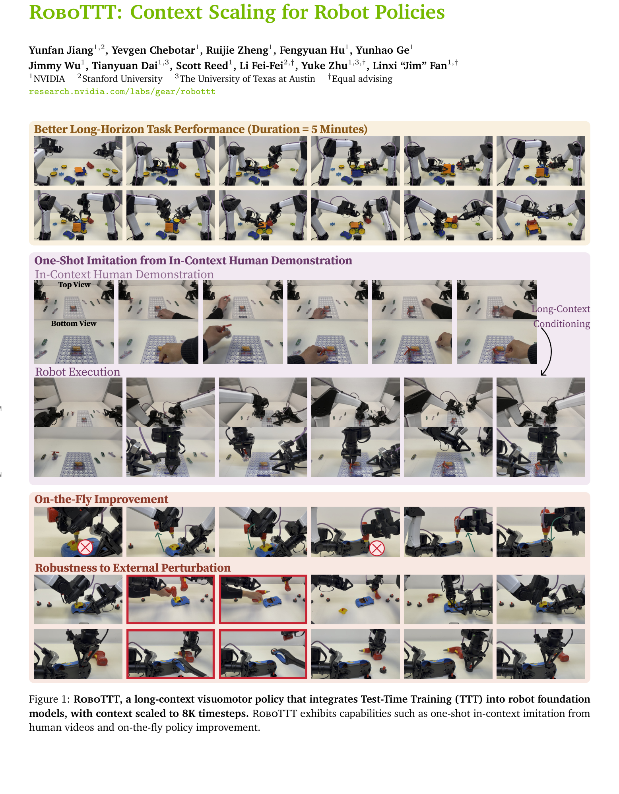
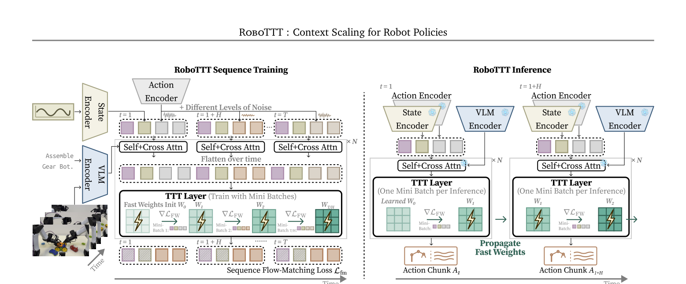
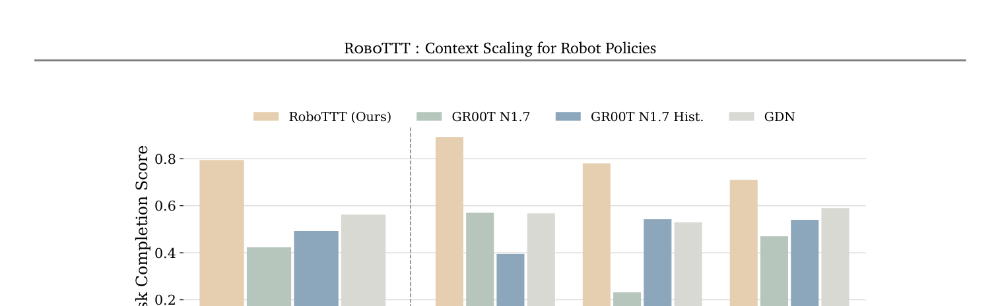
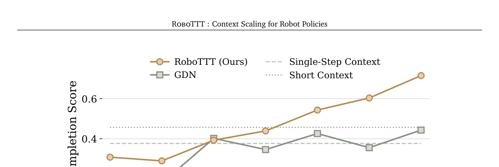
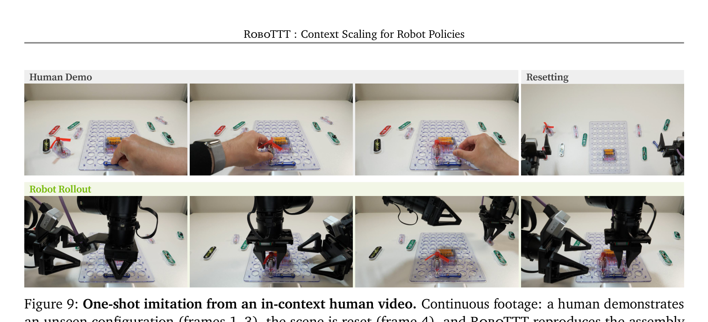
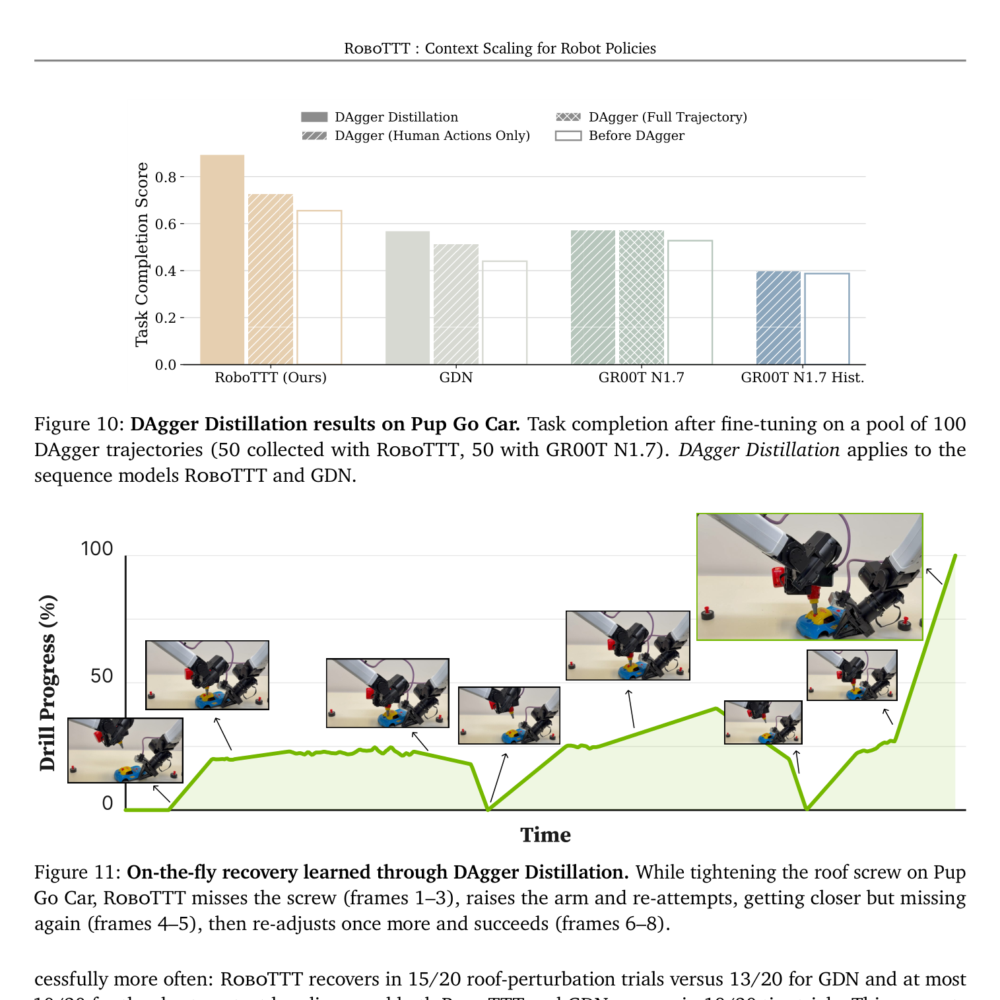
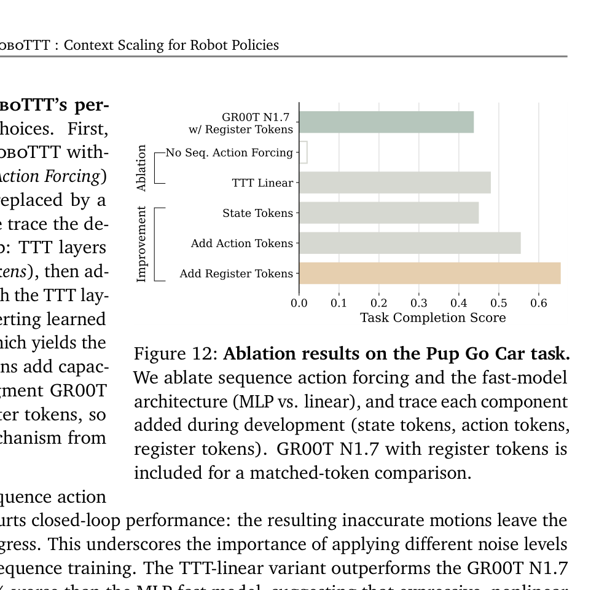

Technical Deep Dive · Long-Context Policy · Fast Weights
RoboTTT：把 8K 步机器人历史压进 Fast Weights
RoboTTT 不把五分钟历史留在 KV cache，也不把它压成一个普通 RNN vector。它在 GR00T N1.7 的每层 DiT action block 后插入可在部署时做梯度下降的 MLP：历史被连续写入 fast weights，当前动作再从这组权重中读取。训练侧用 sequence action forcing 稳定长序列 flow matching，用 TBPTT 把显存从总长度中解耦。
0. 一句话结论 #
RoboTTT 解决机器人 policy 无法经济地利用数千步视觉动作历史的问题：它把 TTT fast weights 作为递归状态，用部署时梯度更新压缩 8K 步上下文，并配合 sequence action forcing、TBPTT 与 DAgger Distillation；真实双臂装配平均完成分从 42% 提到 79%，代价是训练昂贵、在线要反向传播、历史被不可解释地写入权重，且代码尚未公开。
核心 insight：RoboTTT 的 context 不是“可回看的 8K 帧”，而是“被梯度写进参数空间的 8K 步经验”。它把 long-context policy 写成：
$W_t$ 是 rollout 内持续变化的 fast weights；模型不会重新 attend 全部历史，只能通过 $W_t$ 取回过去留下的压缩信息。其优势是每步计算不随历史长度增长，风险是遗忘、覆盖与错误写入都更难检查。

1. 论文定位：把 context length 变成机器人 policy 的 scaling axis #
| 方法 | 历史表示 | 每步随历史增长 | 主要问题 |
|---|---|---|---|
| Single-step VLA | 只有当前观测 | 否 | state aliasing、无阶段记忆 |
| History concatenation | 拼接少量旧帧 | 是/窗口固定 | 时序 OOD、噪声相关 |
| Transformer + KV cache | 保留全部 K/V | 内存线性，decode attention 线性 | 8K 视觉动作流成本过高 |
| GDN / recurrent state | 固定尺寸向量/矩阵状态 | 否 | 线性 update 容量有限 |
| RoboTTT | 两层 MLP 的 fast weights | 对历史长度为常数 | 每步需要内层梯度更新 |
它不是 world model：没有显式预测未来图像或状态。它也不是传统 test-time adaptation：不是用 entropy 等无监督目标临时校准 domain shift。RoboTTT 将 test-time gradient descent 本身定义为序列记忆的 update rule，并在外层 imitation loss 中元学习该 update rule。
论文把它实例化在 GR00T N1.7 上，但贡献单位是 action head 的 temporal module，因此理论上可嵌入其他 flow/diffusion VLA。现有证据只覆盖该 backbone 与 YAM 双臂平台，“plug-and-play”仍是设计主张而非跨架构实证。
2. 方法总览：空间内 attention，时间上 TTT #
At timestep t:
language l + four RGB views o_t
→ frozen/encoded Eagle VLM tokens Φ_t
proprioception q_t → state token
noised H-step action chunk Ã_t → action tokens
16 learned registers R_t gather visual information
→ GR00T DiT self-attention + cross-attention, within timestep t
→ flatten [R_t, q_t, Ã_t] across time
→ TTT MLP fast-weight update, across timesteps
→ tanh-gated residual back to DiT stream
→ flow-matching action velocity → denoised chunk A_t每个 timestep 的 token 是 $[R_t, q_t, \tilde A_t]$，其中 $R_t$ 有 16 个 register，$q_t$ 是 proprioception token，$\tilde A_t$ 是加噪 action-chunk tokens。VL tokens $\Phi_t$ 只参与该步 cross-attention，不直接进入 TTT，避免大量视觉 patch 跨时间更新；register 充当视觉信息的窄通道。

| 组件 | 论文配置 | 作用 |
|---|---|---|
| Base policy | GR00T N1.7：Eagle VLM + 16-layer DiT | 当前观测理解与 action flow matching |
| TTT layers | 每个 DiT layer 后 1 层，共 16 层 | 跨时间 fast-weight recurrence |
| Fast model | 2-layer MLP + GeLU，约 10M/layer | 比线性状态更高容量的历史压缩器 |
| Parameters | DiT 538M → action head 总计约 690M | 新增约 152M sequence parameters |
| Inner update | standard GD，base LR 0.1 + learned LR | 部署时写入 fast weights |
| Gate | $\alpha_0=0.001$，逐维 tanh gate | 初始近似保留 pretrained VLA |
3. 关键创新点 #
3.1 Fast weights 是可学习的递归记忆
旧方法为什么不行：KV cache 精确但成本随长度增长；普通 RNN state 固定但容量与 update rule 受限，难从高度重复的机器人视频流里筛出阶段、遮挡前物体状态和失败原因。
它怎么改：用一个小 MLP $f_W$ 的参数 $W$ 当 hidden state。每来一个 token，先用 key-value binding loss 对 $W$ 做一步梯度下降，再用更新后的 MLP 查询输出。
为什么有效：梯度更新提供非线性、内容依赖的写入规则；外层 task gradient 共同学习 Q/K/V 投影、初始值 $W_0$ 和 learning rate，使“记什么、怎么写、怎么读”由机器人动作损失决定。
代价/限制：每个 control step、每个 TTT layer 都需要 inner-loop gradient；固定尺寸并不等于无限信息容量。论文没有报告 latency/显存相对 GR00T 的数字。
3.2 Sequence action forcing 稳定长序列 flow matching
旧方法为什么不行：若整个长序列共享同一 diffusion/flow noise level，该序列会整体过易或整体过难，loss 与 fast-weight update 的条件高度相关，训练容易失稳。
它怎么改：每个 action chunk 独立采样 $\tau_t$。于是一个 sequence 同时包含不同难度的 denoising target，类似 action 版 teacher forcing，但“forcing”的是 chunk-wise noise schedule。
证据：去掉该设计后真实闭环几乎无法取得有效进展，是最强消融之一。
3.3 TBPTT 让训练长度和显存解耦
序列被切为若干 segment。segment 内保留 outer gradient；边界处 $W$ 继续向前传，但执行 detach。因此：
有效机制：后段仍看到被前段写过的 fast weights，所以 forward context 可达 8K；但 credit assignment 只穿过局部 segment。
隐藏代价：$W_0$ 只从第一个 segment 接收直接梯度，早期写入对五分钟后动作的长期因果贡献被截断。论文没有披露 segment length，这是复现关键缺口。
3.4 Loss masking 把任何时序变成“纯上下文”
RoboTTT 将“更新 fast weights”和“产生 imitation loss”解耦。人类视频没有机器人 action target，仍可更新 $W$；DAgger 中失败动作不应被模仿，也可作为 context 更新 $W$。
这统一出两种能力：
- Human video one-shot：视频段只写记忆，随后 robot 段计算 action loss，目标构型只能从视频中读取。
- DAgger Distillation：失败轨迹写记忆，只有 human correction 计算 loss，学习的是 failure → correction 映射。
4. 训练与推理流程 #
4.1 Pretraining
- 混合长轨迹 tabletop bimanual robot data 与 egocentric human video。
- 从短 context curriculum 逐步增加到目标长度，最长 8K timesteps。
- 冻结 GR00T N1.7 其他组件，只训练新增 TTT/GDN sequence layers。
- 16 张 GB200、30K steps；4K 以下 global batch 64，4K 以上降到 16。
- AdamW，weight decay $10^{-5}$，WSD schedule，peak LR $2\times10^{-5}$。
4.2 Task post-training
每个 downstream task 都在 1K context 下训练 20K steps、8 张 GB200、per-device batch 1；此阶段解冻所有参数，使用 cosine schedule 与 peak LR $5\times10^{-5}$。三项真机数据分别为 Pup Go Car 8 小时、Circuit 6 小时、Gear Bot 5 小时。
这里有一个重要设计：8K 是 pretraining context，downstream post-training 仍只有 1K。长程 update dynamics 从预训练迁移，任务数据不需要完整覆盖 8K training window。
4.3 Inference
reset rollout: W ← learned W0
for each 30 Hz policy timestep t:
encode four 480p RGB views + proprioception + instruction
for each of 16 DiT/TTT blocks:
run within-step attention
W_t ← W_{t-1} - η ∇W L_KVB
add tanh(α) · f_Wt(query)
denoise H-step action chunk with k flow steps
execute action(s)
carry W_t forward部署硬件为 RTX 5090，YAM 双臂机器人，四个 RealSense D405，480p，论文称控制频率 30 Hz。
【不确定】论文未公开 action chunk $H$、flow denoising steps $k$、每次 inference 的 TTT token mini-batch 组织和 30 Hz 下 action chunk 的执行策略。合理可能是沿用 GR00T N1.7 默认配置、逐控制 tick 重规划，或 chunk 内只执行前若干步；必须由代码或补充配置验证。
5. 关键公式逐项拆解 #
5.1 TTT-KVB：先写，再读
$Q_t=X_t\theta_Q$、$K_t=X_t\theta_K$、$V_t=X_t\theta_V$；$X_t$ 来自跨时间展平的 register、state 与 action tokens。$W_t$ 不是 checkpoint slow weights，而是单个 rollout 的动态状态。$\eta$ 由常数 0.1 与 learned learning rate 共同构成。
5.2 Tanh gate：避免新分支摧毁预训练能力
$\alpha\in\mathbb{R}^d$ 是逐 channel gate。初始 $\tanh(\alpha)\approx0$，网络近似原 GR00T；训练只在 TTT 有益的维度打开通路。
5.3 Sequence flow-matching loss
每个 $\tau_t=s(1-u_t)$ 独立采样，$u_t\sim\mathrm{Beta}(1.5,1)$、$s=0.999$。输出 target $A_t-\epsilon_t$ 是从 noise 指向 clean action 的 velocity。
5.4 Masked context objective
$m_t=0$ 的人类视频或失败动作仍执行 fast-weight update，但不产生 imitation gradient；$m_t=1$ 的 robot target 或 human correction 同时写上下文并监督动作。这是 one-shot imitation 与 DAgger Distillation 共用的核心操作。
6. 训练与推理对齐检查 #
| 项目 | 训练 | 推理 | 风险 |
|---|---|---|---|
| Fast-weight update | 每步 inner GD，并对局部 inner loop 求高阶梯度 | 每步 inner GD，无 outer update | 数值漂移会随 rollout 累积 |
| Context horizon | pretrain 最高 8K；post-train 1K | 可运行超过 8K，但未验证 | 超出预训练 update 次数后分布外 |
| Gradient horizon | TBPTT 只在 segment 内反传 | fast weights 全程连续传播 | forward memory 长，credit assignment 短 |
| Action input | ground-truth action 加独立噪声 | 模型生成并执行的 action | 错误 action 会写入后续 memory |
| Visual context | register token 代理视觉 patch | 同样只让 register 跨时序 | 细粒度视觉细节可能在瓶颈中丢失 |
| Reset | 每条 sequence 从 $W_0$ 开始 | 每个 rollout 重置 $W_0$ | 不能跨 episode 持久学习 |
| Human video | 同任务 human-video/robot-trajectory pair | 单段 unseen configuration 视频 | 依赖训练时学到跨 embodiment 对齐 |
论文所说“inference latency 不增长”应读成相对于已处理历史长度的渐近常数，而不是“和 GR00T 一样快”。RoboTTT 无需越来越长的 attention，却额外执行 16 个 MLP 的 gradient update；论文没有报告 baseline latency、RTF 或显存，30 Hz 声明不足以量化开销。
7. 实验复盘：8K scaling 有说服力，但范围很集中 #
7.1 主结果
三项都是真实 YAM 双臂装配：Pup Go Car 平均约 2 分钟，Circuit 约 1 分钟，Gear Bot 约 5 分钟/10 stages。RoboTTT 平均 completion score 为 79%，GR00T N1.7 为 42%，相对提升 87%；GDN 为 56%。完整成功次数：
| 方法 | Pup Go Car | Circuit unseen | Gear Bot |
|---|---|---|---|
| RoboTTT | 9/20 | 13/20 | 2/10 |
| GR00T N1.7 | 3/20 | 3/20 | 0/10 |
| GR00T N1.7 Hist. | 0/20 | 8/20 | 0/10 |
| GDN | 3/20 | 8/20 | 0/10 |

7.2 Context scaling
RoboTTT 从 128、256、512、1K、2K、4K 到 8K 的平均闭环分数总体持续增长；8K 为 71.5%，比 1K 的 43.9% 高 63%，比最佳短上下文 baseline 45.6% 高 57%。GDN 没有出现相同趋势。

7.3 One-shot、扰动与在线恢复
- One-shot human video：Circuit unseen configuration，RoboTTT 65% completion、6/10 full success；GDN 33%、0/10。所有配置共享“assemble circuit”提示，目标只在视频中。
- Perturbation：装好后人为拆掉 roof/tire。RoboTTT 恢复 15/20、18/20；GDN 为 13/20、18/20。Tire 上两种长上下文方法持平，不能把所有收益都归因于 gradient update。
- DAgger Distillation：同一批 100 条 DAgger trajectories 下，correction-only 平均提升 9%，failure-as-context/correction-as-target 提升 33%。


7.4 消融是否支撑结论
MLP fast model 比 linear fast model 高 27%；加入 past action tokens 相对提升 23%，再加入 16 个 register tokens 提升 18%；只给 GR00T 加 register 不改善。这个 matched-token control 支持收益来自 register × temporal update 的交互，而非单纯增参。

7.5 隐藏 confound
- 任务都来自一个 YAM 双臂平台、三类玩具装配，未验证跨机器人、移动操作或 deformable object。
- 8K 模型见过更多连续 context，但不同长度下 global batch 从 64 降到 16；论文没有给 token/样本预算完全匹配分析。
- 主结果 Pup Go Car 使用了 DAgger training，而 scaling curve 明确不使用；“87%”是完整 recipe 收益，不是纯 8K/TTT 收益。
- completion score 是人工设计阶段 rubric；长任务自然会从阶段记忆获益，binary success 的样本数较小。
- 没有 Transformer long-window baseline、外部 episodic memory baseline，也没有 latency-matched recurrent baseline。
- 预训练数据规模与具体混合比例未披露，无法判断 human-video one-shot 的数据覆盖边界。
8. 可复现清单 #
| 模块 | 论文已写 | 仍需确认 |
|---|---|---|
| Backbone | GR00T N1.7，Eagle + 16-layer DiT | 确切 checkpoint 与 action schema |
| TTT | 每层 2-layer GeLU MLP，base LR 0.1 | hidden width、normalization、gradient implementation |
| Tokens | 16 registers + state + action，VL 不直接进 TTT | action token count、tensor layout |
| Flow | Beta(1.5,1)，scale 0.999，chunk 独立 $\tau$ | chunk $H$、denoise steps $k$ |
| TBPTT | carry state + detach boundary | segment length、minibatch order |
| Pretrain | 30K steps、16×GB200、WSD、LR $2e{-5}$ | 数据总量、采样比例、curriculum schedule |
| Post-train | 1K context、20K steps、8×GB200、LR $5e{-5}$ | augmentation、EMA、flow sampling config |
| Deployment | RTX 5090、4×D405 480p、30 Hz | 实测 latency、显存、action execution policy |
| Code | 无公开仓库 | 全部实现与配置尚不可审计 |
最低成本复现路径：先在一个冻结 action DiT 后只插 1 层 TTT，使用 128/512/1K context 验证 loss 稳定性；再加入 per-chunk noise；最后才做 TBPTT 与 8K。必须同时记录 inner-gradient norm、$\|W_t-W_0\|$、gate magnitude、fast-weight reset 和 wall-clock latency。
最容易踩的坑：不要在 rollout 间忘记 reset $W_0$；不要让 failed robot actions 进入 imitation target；不要把 TBPTT detach 误写成重置 fast weights；不要把相同 $\tau$ 广播到整条 sequence。
9. 可能的改进方向 #
| 改动点 | 预期收益 | 风险 | 验证实验 |
|---|---|---|---|
| 显式 progress/state token + fast weights | 让阶段记忆可读、减少 aliasing | progress 标注或伪标签错误 | Gear Bot 阶段 probe 与 intervention |
| 分层快慢记忆：recent attention + TTT | 保留精确近期接触，压缩远期历史 | 两种 memory 冲突 | 固定计算量比较 TTT-only/hybrid |
| 不确定性门控 fast-weight write | 避免错误动作污染记忆 | 过度保守导致不写新信息 | 人为注入错误 action，测恢复与遗忘 |
| 跨 episode persistent memory | 从多次失败持续改善 | 安全、隐私与灾难性漂移 | 固定任务连续 20 episodes，周期性 reset 对照 |
| 更高效 inner optimizer / low-rank fast weights | 降低在线 backward 开销 | 压缩后容量不足 | 同延迟比较 GD、Muon、LoRA-fast、GDN |
| world-model auxiliary objective | 让 $W_t$ 编码可预测动力学而非仅 action | 生成目标分散 policy capacity | 加入 latent next-state loss，测 perturbation recovery |
对 task progress 建模的启发：RoboTTT 证明长历史能解决视觉相似阶段的 state aliasing，但 progress 被隐式藏在 MLP 权重里。更可控的版本应从 $W_t$ 解码 stage belief、completed predicates 与失败事件，让策略既有长记忆，也能被监督和调试。
10. 速读备忘卡 #
- RoboTTT 是 GR00T N1.7 的 long-context action policy 扩展。
- 8K timesteps 约等于 30 Hz 下五分钟，不是 8K visual tokens。
- 历史不存 KV cache，而被 inner-loop gradient 写入 fast weights。
- 每个 16-layer DiT block 后加入一个 2-layer MLP TTT layer。
- attention 做 timestep 内融合，TTT 做 timestep 间记忆。
- 16 个 register tokens 代理视觉信息进入跨时序模块。
- tanh gate 从 0.001 开始，避免破坏 pretrained policy。
- sequence action forcing 为每个 action chunk 独立采样 noise level。
- TBPTT 跨 segment carry fast weights，但截断 gradient。
- pretrain 到 8K，downstream post-train 仍只用 1K context。
- 平均 completion 79%，GR00T single-step 为 42%。
- 8K 比同模型 1K pretraining 高约 63%。
- Human video 只写 context、不计算 action loss，实现 6/10 one-shot。
- DAgger Distillation 把失败当 context、纠正当 target。
- 固定历史成本不等于零成本：每步仍需 16 层 test-time backward。
- 代码、TBPTT segment、action chunk 和 latency 尚未公开。
一句话记忆：RoboTTT 把机器人的 rollout history 从 token space 搬到了 weight space。